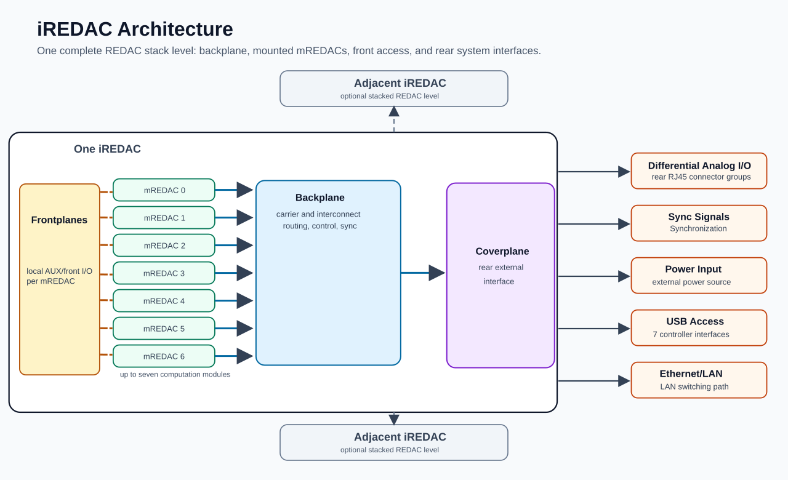

iREDAC¶
An iREDAC is one complete REDAC stack level. It combines the iREDAC backplane, up to seven mounted mREDACs with their frontplanes, and a rear coverplane that exposes the relevant external system interfaces.
An iREDAC can be used as an independent analog computer. Multiple iREDACs can also be stacked and connected together to form a larger REDAC system.
An iREDAC contains:
- 1 iREDAC backplane.
- Up to 7 mREDAC modules, installed in backplane slots
0..6. - Frontplane access on the installed mREDACs.
- 1 rear coverplane for external analog, synchronization, power, USB, and Ethernet/LAN access.
Architecture Overview¶

The diagram is intentionally simplified. The detailed behavior of the mREDACs, their cluster blocks, the frontplane signals, and the backplane routing is documented in the corresponding lower-level pages.
Main Assemblies¶
The backplane is the carrier and interconnect board of the iREDAC. It holds the mREDAC modules, provides backplane-level routing between them, distributes digital control and synchronization signals, and provides the paths used when iREDACs are stacked.
Each mREDAC provides the local analog computation structure. A fully populated iREDAC has seven mREDACs, each with its own clusters, routing, control interface, and frontplane access.
The frontplanes provide front-side access for the mREDAC AUX/front I/O signals. These are useful for direct module-level signal access and are documented separately in the frontplane and mREDAC pages.
The coverplane is the rear external interface of the iREDAC. It brings selected iREDAC-level connections out of the system enclosure and provides the external access points needed for operation.
Coverplane Interfaces¶
At user level, the coverplane provides:
- Differential analog I/O from the backplane, available through rear RJ45 connector groups.
- Synchronization links for coordinating the local iREDAC and, when stacked, adjacent iREDACs.
- External power input for powering the iREDAC through the coverplane power path.
- USB access connected to the seven mREDAC controller interfaces through the iREDAC USB path.
- Ethernet/LAN access connected to the mREDAC controller interfaces through the iREDAC LAN switching path.
The rear differential connectors are used for the analog differential signals that leave or enter the iREDAC through the backplane path. Synchronization links are also available at the rear coverplane for stacked operation. The implementation details behind these connector paths are internal to the hardware and are not needed for normal system-level use.
Standalone And Stacked Use¶
In standalone use, one iREDAC contains the complete set of mREDAC resources needed for the configured computation. The backplane routes between the installed mREDACs, the coverplane provides external system access, and the frontplanes provide local mREDAC I/O access.
In stacked use, multiple iREDACs are connected to form a larger REDAC. The backplane routing and synchronization paths allow signals and timing to be coordinated beyond one iREDAC level. In this case, each iREDAC remains one physical stack level with its own backplane, mREDACs, frontplanes, and coverplane.
Programming with pybrid¶
In pybrid, the iREDAC level is represented by the stack part of a location. The mREDACs installed in one iREDAC are represented as carriers on that stack.
The important addressing concepts are:
stackidentifies the iREDAC level.carrieridentifies the mREDAC slot within that iREDAC, using carrier IDs0..6.clusteridentifies one of the three clusters on an mREDAC, using cluster IDs0..2.ididentifies the lane within the cluster.
For example, two lanes on different mREDACs in the same iREDAC can be described as:
from pybrid.redac.entities import Loc
src = Loc.new_lane(stack=0, carrier=0, cluster=0, id=20)
dst = Loc.new_lane(stack=0, carrier=3, cluster=1, id=20)
Here, both locations are on iREDAC stack 0. The source is on mREDAC Slot 0, and the destination is on mREDAC Slot 3. These locations can then be passed to the REDAC router. Since the route crosses mREDACs inside the same iREDAC, pybrid can program the local mREDAC T-Blocks and the iREDAC backplane routing resources when those blocks are present in the discovered or configured carrier descriptions.
A route to another stacked iREDAC changes the stack value:
src = Loc.new_lane(stack=0, carrier=0, cluster=0, id=20)
dst = Loc.new_lane(stack=1, carrier=2, cluster=1, id=20)
In this example, the source is on iREDAC stack 0 and the destination is on iREDAC stack 1. The different stack value represents an intended route to another stacked iREDAC. When the relevant carriers and backplane routing blocks are present in the router context, pybrid programs the corresponding adjacent-stack routing sectors.
The route can be requested through the router on the configured REDAC object:
The same routing constraints apply at iREDAC level as in the mREDAC and backplane documentation:
- Carrier IDs must be in
0..6for the seven mREDAC slots. - Cluster IDs must be in
0..2. - Backplane-capable routed lanes use mREDAC lane IDs
8..31. - Source and destination lane IDs must match for routed paths.
- Lanes
0..7are local same-cluster lanes and are not general iREDAC/backplane routes.
When using a discovered hardware description, the REDAC controller adds the available carriers to controller.computer. Routing depends on those carriers having valid location metadata and on the relevant local T-Block and backplane routing blocks being present in the hardware description. The configured REDAC object and its router then use the current router model and discovered carrier locations to program same-iREDAC and stacked-iREDAC routes.
If the router context is incomplete, pybrid can still evaluate a route against placeholder routing objects. For configuration that should be serialized and applied to hardware, verify that the involved carriers have valid locations and that their tblock, st0block, st1block, and st2block objects represent the physical routing resources.